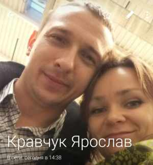
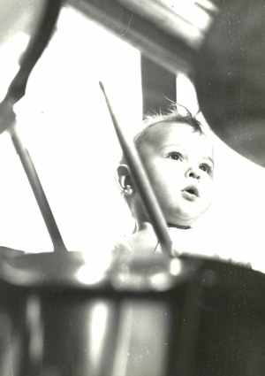
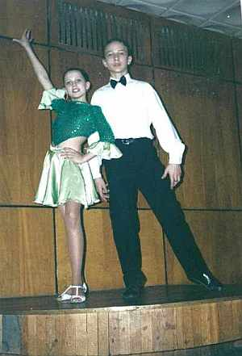

Кравчук Ярослав СергеевичРодился 03.02.1988 в г.Гродно, Беларусь. окончил колледж им. Счастного по специальности электротехника, Гродненский государственный университет по специальности инженер-электроник, в 2011 женился на Лагута Ольге Александровне, работает инженером в ОАО "Гродно-Азот". |

 любит музыку  когда-то носил длинные волосы и занимался бальными танцами |
|
Родители:
Братья/Сестры: Дети:
|